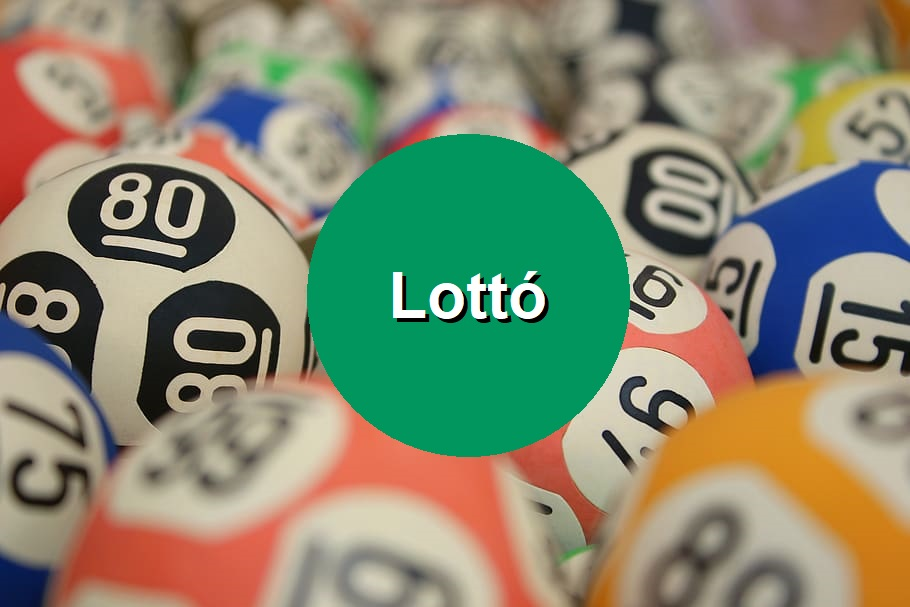

Lottó

Korábbi sorsolások
Leggyakoribb számok
Leghasonlóbb számsorok
Leghosszabb sorozatok számsorokban
Legkisebb összegű számsorok
Grafikonok
Érdekes történetek
A 2 leghosszabb sorozatot tartalmazó számsor
3 egymást követő szám: